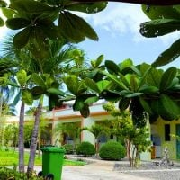
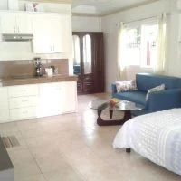
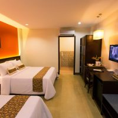
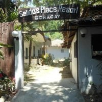
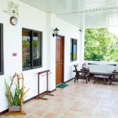
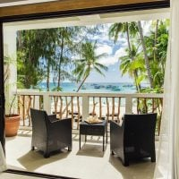
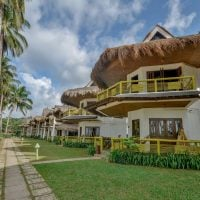

Imagine Bohol Apartment
Alona Studio Bungalow
Bohol Beach Club
White Beach, Boracay
White Beach, the main beach in Boracay is arguably the most famous of the Philippines beaches and is often the major destination for tourists planning a short trip in the country. White Beach is both family friendly and romantic. It’s home to many resorts, restaurants and bars. Beach water sports are a popular activity in the afternoons, whilst at night, the bars get buzzing!
Salidos Place Resort
Greenyard Inn
Villa Caemilla Beach Boutique Hotel
Cresta De Gallo
This is hands down my favorite of all the Philippines beaches and probably my favorite spot in the country! It is not hard to see why. The cleanest, whitest sand on this little islet is surrounded by turquoise waters reminiscent of the Maldives. The island is home to one fisher family with no running water or electricity. The fact that it is remote and difficult to access makes it all the more special, and indeed the island was practically deserted during my visit.
Daluyon Beach and Mountain Resort
Sheridan Beach Resort and Spa